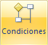
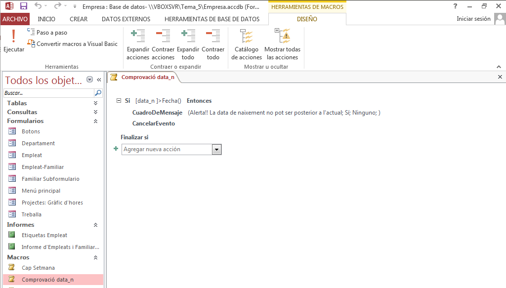
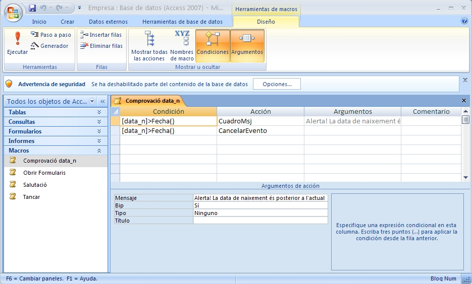
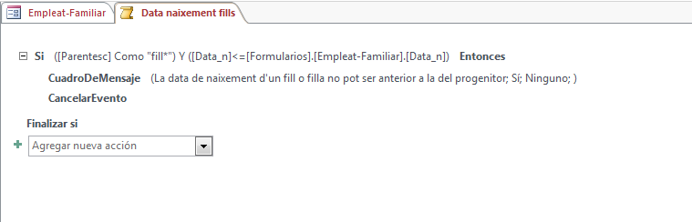
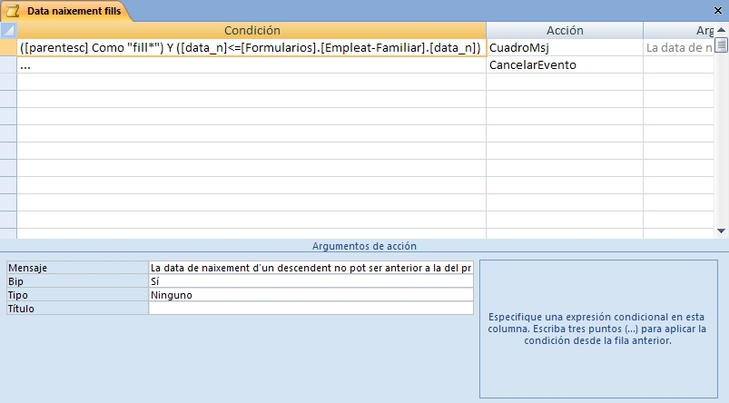
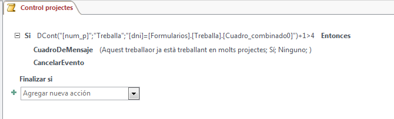

2.4 Condicions
En les macros és d'extremada utilitat exacutar una acció únicament si s'acompleix una condició. Les condicions es posen amb l'acció Si (condicional). Com en el cas de les submacros, podem posar el Si, tant arrastrant de la dreta, com triant l'acció Si. Totes les accions que posem dins del Si s'executaran només si s'acompleix la condició.
Des de la versió Access 2010 es pot posar la clàusula Si no, que només s'exefcuta si no s'acompleix la condició.
En el següent vídeo es mostra la creació d'una macro amb condició, i posteriorment s'amplia per a posar la part negativa, quan no s'acompleix la condició:
|  | En Access 20107 la manera de posar condicions era apretant al botó que es veu a l'esquerra. Apareixia una columna nova on es posava la condició, i només en cas que s'acomplira la condició s'executava l'acció de la columna de la dreta. |
Exercici 2.8
Crear una macro incrustada en el control Sou del Formulari Empleat per a traure un missatge d'informació si hem posat un sou molt gran a un empleat (més de 4.000€).
La condició és Sou>4000.
El moment d'activar és en eixir del control Sou (esdeveniment Al Salir).
Heu d'observar que traurà el missatge, però no impedirà l'acció.
Nota
Sou fa referència al control Sou del formulari Empleat, no al camp Sou de la taula Empleat. Podeu comprovar en el formulari Empleat que efectivament el control que fa referència al sou porta aquest nom, i que està lligat amb el camp sou. Però és important saber que fa referència a un control del formulari. Si el formulari no estiguera obert, Access no sabria a que es refereix. Però com que la macro està incrustada en el formulari, no es pot executar si el formulari no està obert.
Exercici 2.9
- Les accions a realitzar podrien ser: traure un missatge i no executar l'event (així si l'event és en eixir del control, en cancel·lar-lo no eixirem del control). I les dues accions s'han d'executar únicament si s'acompleix la condició. La següent imatge ho il·lustra:

Com podem comprovar si les accions que hem de fer en cas que s'acomplesca la condició són més d'una, han d'anar dins del Si ... Finalizar si.
- Si aquesta macro l'executem en eixir del component data_n del formulari Empleat, anirà quasi sempre bé, però si quan estem editant una data errònia tanquem el formulari, ens eixirà el missatge (i potser més d'una vegada) però la guardarà. Per evitar aquest efecte no desitjat, podríem executar també la macro abans d'actualitzar el registre (és l'esdeveniment Antes de actualizar del formulari, no del control)
NotaCom que la Macro Comprovació data_n és independent, la podem executar en qualsevol moment. Però com fa referència al control data_n que és un objecte del formulari Empleat, si no està obert aquest formulari donarà un error.
En Access 2007, la macro quedarà d'aquesta manera. Observeu que posem les 2 accions en línies diferents, i abans hem de tenir la condició en les 2 files. També valdia posar punts suspensius (...) en la condició de la segona fila, cosa que equival a repetir la condició
En realitat tot açò de la data de naixement ho podríem haver solucionat amb una senzilla regla de validació en el moment de dissenyar la taula.
Però suposem ara la següent restricció: la data de naixement d'una filla o fill no pot ser posterior a la data de naixement del pare o la mare. Si volem posar aquesta restricció en la taula familiar, no podem posar-la com una regla de validació, perquè afecta valors d'una altra taula (Empleat). Posaríem la macro "Antes de actualizar" en el subformulari "Familiar Subformulario", fent referència a [Data_n] (data de naixement del familiar) i al control Data_n del formulari "Empleat-Familiar".
Exercici 2.10
Feu l'anterior restricció amb una Macro independent com la de la figura següent. La condició és:
([Parentesc] Como "fill*") Y ([Data_n]<=[Formularios].[Empleat-Familiar].[Data_n])
No us enganyeu amb cap caràcter, perquè sinó Access no ho entendrà. Si us dóna error reviseu el nom de cada objecte (sobretot del formulari Empleat-Familiar).
Tots els elements que no estan qualificats (no porten el nom de l'objecte davant, separat amb un punt) faran referència a objectes del formulari actual, en aquest cas el formulari Familiar Subformulario. Si volem fer referència a un altre objecte, haurem de posar on està. Aquesta és la raó d'haver de posar [Formularios].[Empleat-Familiar].[data_n] per a fer referència a aquest element.
Guardeu la macro amb el nom "Data naixement fills", i el moment d'executar-la és abans d'actualitzar en el subformulari "Familiar Subformulario".

Així és com quedaria en Access 207. Observeu que la segona vegada, en compte de tornar a posar tota la condició, es pot posar "...".

Eercici 2.11
En el Tema 3, de Model Relacional, les coses que no podíem representar amb el model, les deixàvem com restriccions externes. L'única manera de fer-les efectives seria amb Macros i per mig de programes (Mòduls) de Visual Basic.
Feu complir la següent restricció amb una macro independent, anomenada Control projectes:
El número total de projectes treballats per un treballador no ha de ser major que 4.
El moment de controlar serà abans d'actualitzar un registre en la taula TREBALLA, per tant com en els casos anteriors, haurem controlar l'esdeveniment del formulari Treballa anomenat Antes de actualizar.
S'haurà d'utilitzar la funció DCont per a comptar els projectes en els quals està treballant, i tenir en compte que el que s'està introduint encara no està introduït del tot. Aquesta funció té 3 paràmetres: el primer el camp que volem comptar (un que no estiga buit, per exemple [dni]; el segon és l'àmbit de recerca, que en el nostre cas és la taula Treballa; el tercer és un criteri per a seleccionar les files (si no posem res se comptaran totes les files), que en el nostre cas seria [dni]=[Formularios].[Treballa].[Cuadro_combinado0].
Aneu amb compte amb el nom del control on es col·loca el dni en el formulari Treballa. En el meu cas s'anomena Cuadro_combinado0, però potser vosaltres no tingueu el mateix nom.
Aquesta seria la condició (en el meu cas):
DCont("[num_p]";"Treballa";"[dni]=[Formularios].[Treballa].[Cuadro_combinado0]")+1>4
I així quedaria la macro

Per a poder comprovar el funcionament de la macro, podeu intentar introduir una nova fila (cuideu que siga nova, no modifiqueu una fila anterior), per mig del formulari Treballa, amb les segünets dades:
- Pilar Folch Mestre (18932165)
- Auditoria ordinària
- 7 hores
Com que Pilar Folch ja estava treballant en 4 projectes, treballar en aquest altre passaria de 4 projectes, i per tant hauria de donar error (la macro cancelaria l'event).
En el cas d'Access 2007 quedaria:
Llicenciat sota la Llicència Creative Commons Reconeixement NoComercial SenseObraDerivada 2.5